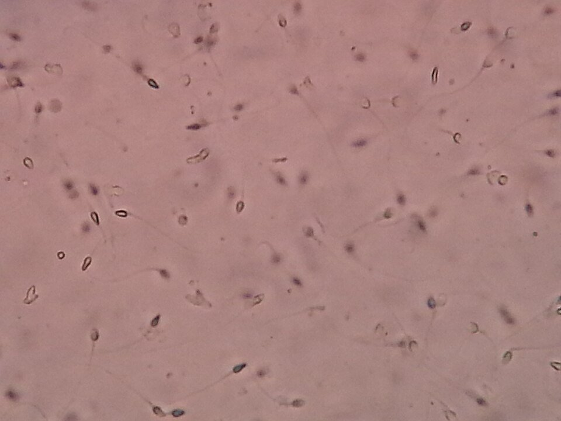
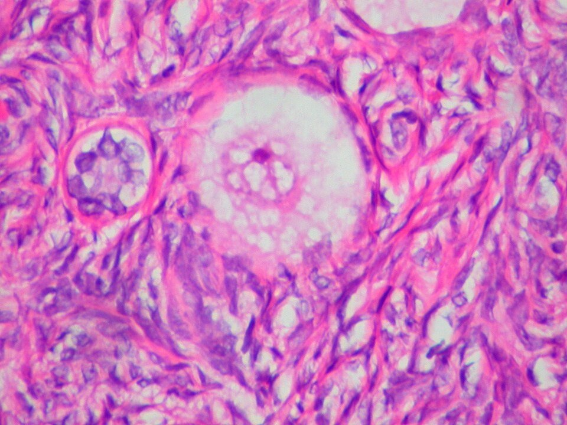
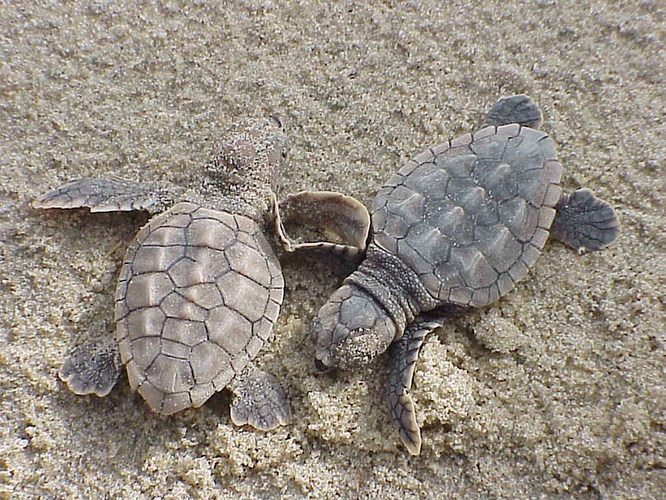
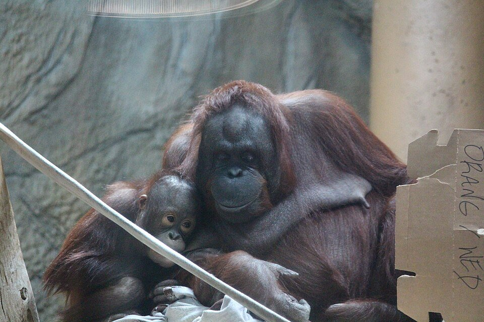
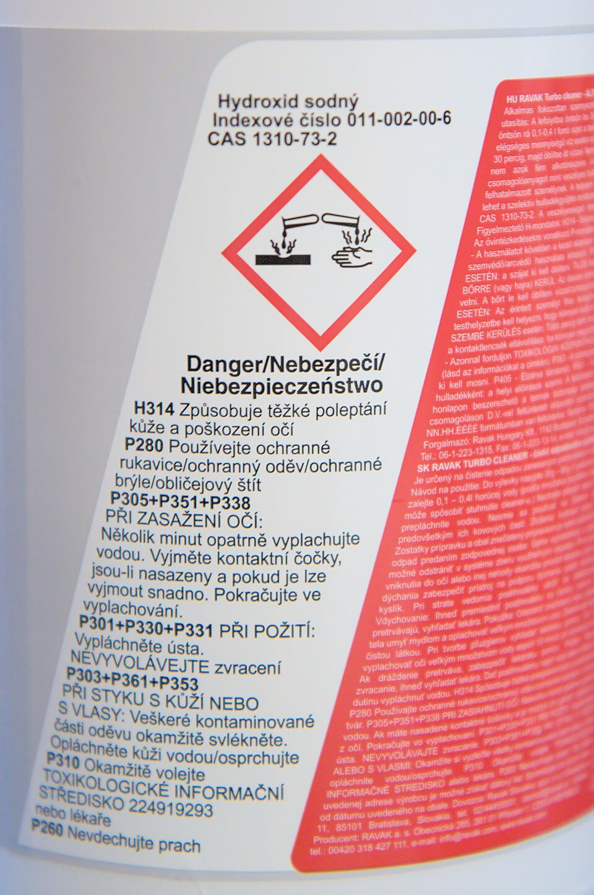
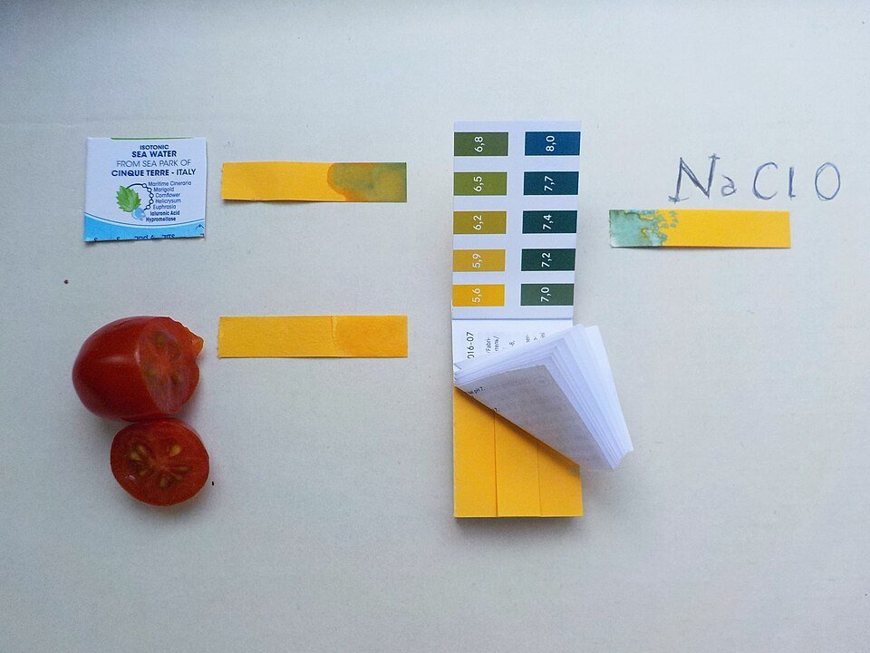
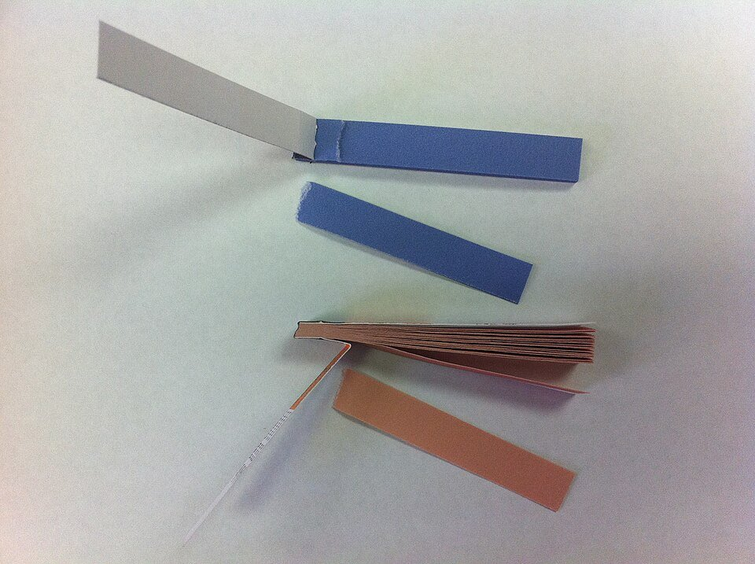
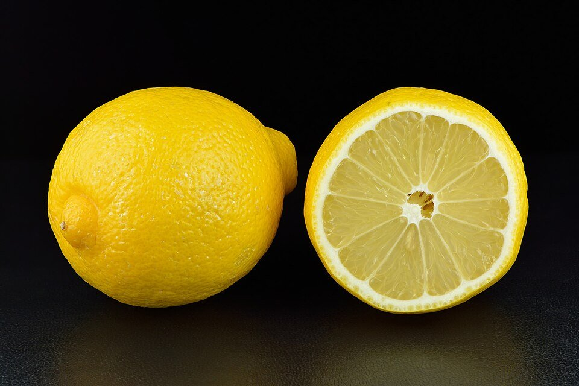

Five lessons, 3D labs, a pH runner game and a shuffled practice exam. Revise the whole of Exam 3: reproduction, pregnancy, the menstrual cycle, acids and hazards, and the pH test.
How living things make new life, and why it matters for endangered species.
Sexual reproduction
Needs two parents. A male sex cell (sperm) and a female sex cell (egg) join in fertilisation to make a fertilised egg. The offspring are genetically different from their parents.
Why it matters
Reproduction passes on genetic information and keeps the species alive. A mix of genes gives variation, which helps a species survive when the environment changes.

Sperm cells under a microscope: small cells with long tails.

An egg cell in the ovary: much bigger than a sperm.
Match the reproductive terms
Sexual reproduction or not?
Endangered species and reproduction
An endangered species is at risk of extinction. Conservationists help with captive breeding, artificial insemination, protecting nesting areas and relocation to safe places.

Sea turtle: eggs are often eaten or destroyed by predators.Giant panda: females are fertile for only a few days each year.

Orangutan: needs safe forests to raise babies.Rhino: a very long pregnancy of about 16 months.Cheetah: poor genetic diversity in the wild.
“Describe the role of the placenta during pregnancy and explain how its failure would affect the developing foetus.”
Tap every statement you would put in a full-mark answer, then check.
14
The Menstrual Cycle
How the body prepares for a possible pregnancy every month.
What is a period?
Each month the body gets ready for a baby. If there is no fertilised egg, the lining of the uterus breaks down and leaves the body. This is a period or menstruation. It usually lasts 3 to 7 days and is normal and healthy. Most girls get their first period between 9 and 13, but it can be earlier or later.
The cycle
The menstrual cycle lasts about 28 days (it can vary). An egg matures in the ovary, is released (ovulation), and the uterus lining thickens. With no fertilisation, the lining breaks down and a period begins.
What happens on which days?
Days
What happens?
1–5
Menstruation: the uterus lining breaks down and is lost
6–13
A new lining builds and an egg starts to mature
14
Ovulation: an egg is released from the ovary
15–28
The lining stays thick, waiting for a fertilised egg
The four key hormones
Drag the day slider and watch the hormones in the Cycle Lab. Fact: a person who menstruates has about 450 periods in a lifetime.
Build a full-mark answer
Long-answer builder
“Discuss how hormones coordinate the menstrual cycle and explain how disrupting this coordination could prevent pregnancy.”
Tap every statement you would put in a full-mark answer, then check.
15
Acids and Hazards
Acids, alkalis and the symbols that keep us safe.
Acids
Sour taste, pH less than 7. Examples: vinegar, lemon juice (weak acids) and hydrochloric acid, battery acid (strong acids).
Both acids and alkalis can be corrosive or an irritant, depending on how strong they are.
Hazard symbols

A real label: this strong alkali cleaner shows the corrosive symbol and the word “Danger”.Biohazard symbol: warns of dangerous bacteria, viruses or toxins.
Match the symbol to its meaning
Real-life hazards
Substance
Type
Hazard
Bleach
Alkali
Corrosive to skin
Vinegar
Weak acid
Safe, but sour
Battery acid
Strong acid
Dangerous: corrosive
Washing-up liquid
Weak alkali
Mild irritant
Oven cleaner
Strong alkali
Can cause burns
16
The pH Test
Measuring how acidic or alkaline a substance is.
The pH scale
Substance
pH
Acid, alkali or neutral?
Lemon juice
2
Acid
Vinegar
3
Acid
Pure water
7
Neutral
Soap solution
9
Alkali
Bleach
12
Alkali

Universal indicator paper: compare the colour with the chart.

Litmus paper: red in acid, blue in alkali, no change in neutral.

Lemon juice is a weak acid (about pH 2).
Match the pH to the universal indicator colour
Acid, alkali or neutral?
Indicators
Universal indicator shows a different colour for each pH (red = strong acid, green = neutral, purple = strong alkali).
Litmus paper turns red in acid and blue in alkali, and stays the same in neutral.
Natural indicators, such as red cabbage, change colour in acids and alkalis. You can make your own with hot cabbage water.
Real photos: tap the part
Build a full-mark answer
Long-answer builder
“Design a safe investigation to compare the pH of five household substances. Explain how you would make it accurate and safe.”
Tap every statement you would put in a full-mark answer, then check.
3D
Live Labs
Four hands-on labs, two of them in 3D. Everything moves, and every lab works with touch or the keyboard.
Lab 1 · Lesson 12 · 3D
Fertilisation Quest
Steer the gold sperm cell to the egg. Then watch the zygote divide into an embryo.
Sperm cell
1. Sperm and eggA male sex cell and a female sex cell.
2. FertilisationThe sperm joins the egg.
3. ZygoteOne fertilised cell.
4. EmbryoThe cell divides again and again.
Tap or click in the tube to steer, or use the arrow keys. Swim towards the big egg on the right.
Lab 2 · Lesson 13 · 3D
Pregnancy Explorer
Slide through nine months and turn the model to see the baby, the sac, the cord and the placenta.
Drag sideways to turn · arrow keys work too
Month 1
The fertilised egg implants in the uterus.
Size of baby
Lab 3 · Lesson 14
Cycle Lab
Move through the 28 days. Watch the egg, the lining and the four hormones change together.
Day 1
Menstruation
The uterus lining breaks down and is lost.
Lab 4 · Lessons 15 and 16
pH Lab
Pick a substance and an indicator, add the drops and read the pH. Test enough to fill your Investigation Record.
Pick a substance
Result
Add the indicator to see the colour.
Substance
Indicator
pH
Type
Play
Bonus Game: pH Runner
Run down a 3D track and steer through the right door for each substance. About two minutes, no lives.
A substance appears. Steer your runner through the door that matches: Acid, Neutral or Alkali. Use the left and right buttons, the arrow keys or swipe. A wrong door just tells you the right answer and keeps running. This bonus round is optional and does not count towards any mark.